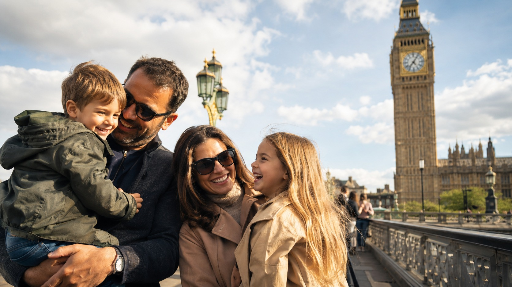
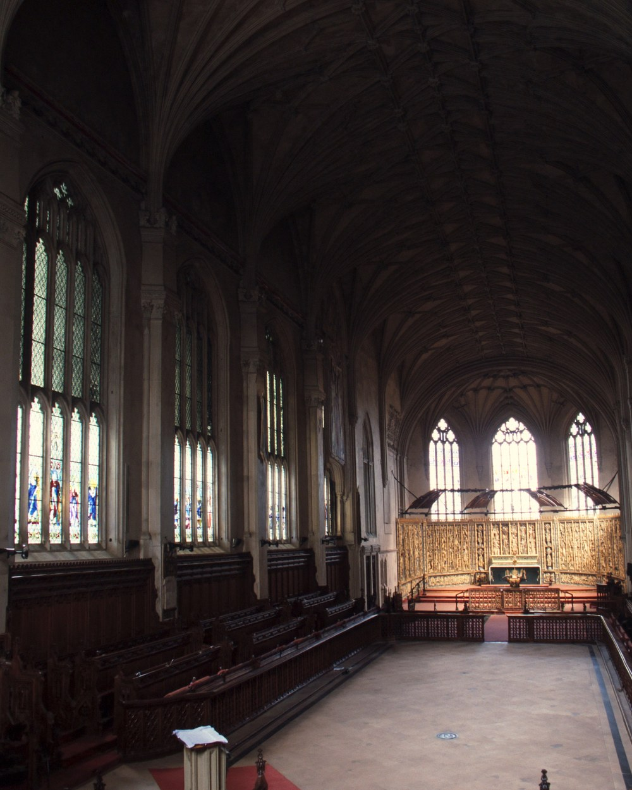
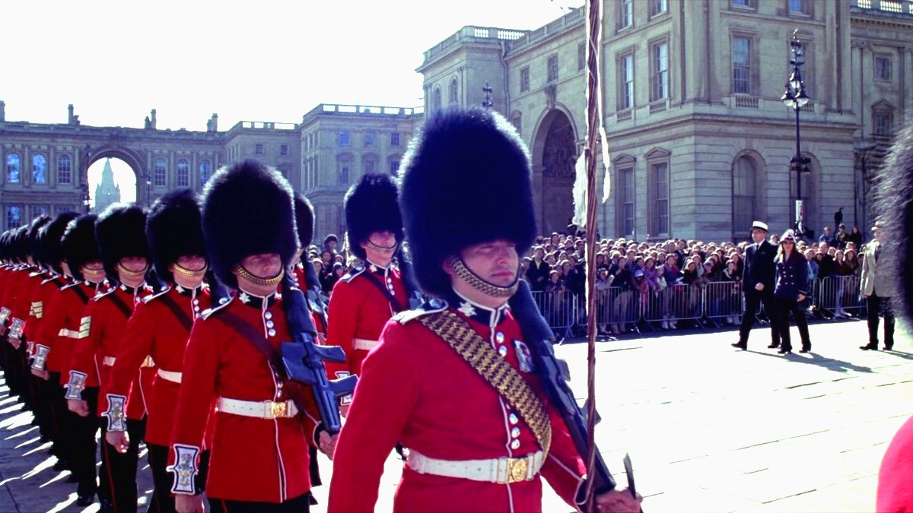

עודכן לאחרונה ב-2 באוקטובר 2026. המחירים, שעות הפתיחה ולוח חילופי המשמר נבדקו מול האתרים הרשמיים באותו יום
זה האזור שבגללו באים ללונדון בפעם הראשונה, וגם האזור שבו הכי קל לבזבז יום: הפרלמנט, המנזר, הארמון והפארק נמצאים כולם במרחק הליכה, אבל מי שמנסה להיכנס לכולם מסיים את היום בתור, לא במקום. המדריך הזה בנוי על כלל אחד פשוט: את כל המסלול עושים ברגל ומבחוץ, ונכנסים למקום גדול אחד בלבד. השאלה היחידה היא לאיזה.
בחרו כיוון ותראו כאן את המקומות עצמם, עם מה שכדאי לדעת לפני שהולכים.
מה זה ווסטמינסטר וסנט ג׳יימס, ולמה זה מסלול ולא רשימה

ווסטמינסטר היא העיר השנייה של לונדון. הסיטי צמח סביב המסחר, וווסטמינסטר צמחה סביב המלך: אדוארד המתוודה בנה כאן מנזר וארמון במאה האחת עשרה, הפרלמנט ישב בארמון הזה כמעט אלף שנה, ומשרדי הממשלה עדיין יושבים ברחוב אחד, וייטהול, שמחבר את הפרלמנט לכיכר טרפלגר. סנט ג׳יימס, מערבה משם, היא השכונה שנבנתה סביב ארמון סנט ג׳יימס במאה השבע עשרה: מועדוני ג׳נטלמנים בפאל מאל, חנויות של כובענים וחייטים בג׳רמין סטריט, והפארק שהפריד בין שני הארמונות. היום זה הרובע הרשמי של הממלכה, ובערב הוא מתרוקן.
מה שזה אומר לכם בפועל: כל מה שבאים לראות עומד על קו אחד באורך ארבעה קילומטרים, מהנהר במזרח עד פיקדילי במערב, והקו הזה עובר דרך פארק. אין צורך ברכבת התחתית בין העצירות, ואין סיבה לחזור על קטע. ההליכה החיצונית לבדה היא כארבע שעות עם עצירות לצילום, ועם כניסה אחת גדולה, המנזר או הבונקר של צ׳רצ׳יל, זה יום של שש שעות בערך. מי שמנסה להכניס גם את המנזר, גם את צ׳רצ׳יל וגם סיור בביג בן באותו יום לא רואה את הפארק.
למי האזור הזה מתאים, ולמי פחות
ביג בן, המנזר, הארמון והמשמר הם הדברים שכולם באים לראות, וכולם על קו אחד. זה היום הראשון ברוב המסלולים שלנו.
הגשר בבוקר, הפארק בצהריים, המול והארקדות אחר הצהריים. האזור הכי מצולם בעיר, ועם אור טוב כמעט בכל שעה.
אלף שנה של הכתרות במנזר, הבונקר שממנו נוהלה המלחמה, רחוב הממשלה והארמון. הסיפור הבריטי במרחק הליכה אחד.
הגרסה החיצונית לא עולה שקל: הפארק, השקנאים, הסוסים, הטקס והשעון. שלוש שעות שטוחות עם עגלה, בלי אף תור.
ולמי זה פחות מתאים. מי שמחפש אוכל רחוב ושווקים לא ימצא אותם כאן, כי זה רובע של משרדי ממשלה ומועדונים, ואוכלים או בפארק או מעבר לפיקדילי. מי שרוצה ערב, חיי לילה ומוזיקה ימצא את זה בסוהו שמעבר לקצה המסלול, לא בתוכו. מי שכבר ראה את ביג בן ואת הארמון בביקור קודם יעדיף אזור עם פחות תיירים. ומשפחות עם פעוטות שמנסות לשלב שני פנים היסטוריים ארוכים באותו יום, או מי שמנסה לדחוס שלוש או ארבע כניסות בתשלום, יגמרו את היום בתור ובלי הפארק.
📅 מה פתוח מתי, לפני שבונים את היום
זה הלב של המדריך הזה. הטבלה נכונה ל-2 באוקטובר 2026 לפי האתרים הרשמיים, וכמו תמיד בודקים לפני שיוצאים, כי לוחות טקסים ושעות משתנים.
| מקום | מתי | מה חשוב | עלות |
|---|---|---|---|
| ביג בן ובתי הפרלמנט מבחוץ | תמיד | הצילום הקלאסי מגשר וסטמינסטר, מהצד הצפוני | חינם |
| סיור ביג בן, מגדל אליזבת | ימים נבחרים, בהזמנה | 334 מדרגות, גיל 11 ומעלה, כתשעים דקות. הכרטיסים משתחררים שלושה חודשים מראש | בתשלום |
| מנזר וסטמינסטר, ביקור | ימי חול מ-9:30, כניסה אחרונה 15:30. שבת מ-9:00, כניסה אחרונה 15:00 | ראשון תפילה בלבד, ומומלץ להזמין חלון זמן | בתשלום |
| חדרי המלחמה של צ׳רצ׳יל | כל יום מ-9:30 עד 18:00, כניסה אחרונה 17:00 | מומלץ להזמין מראש, בעונה התור בלי כרטיס ארוך | בתשלום |
| וייטהול, הצנוטף ושער דאונינג סטריט | תמיד | לרחוב דאונינג עצמו אין כניסה לציבור, רואים את השער | חינם |
| הורס גארדס | תמיד | משמר הפרשים ברחבה, והמעבר דרך הקשת לפארק | חינם |
| פארק סנט ג׳יימס | כל יום, מחמש בבוקר עד חצות | הגשר הכחול, השקנאים והתצפית על הארמון | חינם |
| חילופי המשמר, ארמון בקינגהאם | לא כל יום. בלוח שנבדק לאוקטובר 2026: שני, רביעי ושישי ב-11:00 | הלוח משתנה מחודש לחודש ומבוטל במזג אוויר קשה. בודקים את לוח הדיוויזיה המלכותית סמוך לביקור | חינם |
| חדרי המדינה, ארמון בקינגהאם | קיץ בלבד, בדרך כלל יולי עד ספטמבר | סגור בשאר השנה, מלבד סיורים מודרכים יקרים בתאריכים נבחרים | בתשלום |
| ארמון סנט ג׳יימס | מבחוץ בלבד | לא פתוח לציבור. החזית מפאל מאל והזקיף בשער | חינם |
| ג׳רמין סטריט והארקדות | שעות חנויות, בראשון חלקי | ארקדת פיקדילי וארקדת פרינסס, חנויות ולא דוכנים | חינם |
המסקנה: מי שרוצה את חילופי המשמר בוחר קודם יום שבו יש טקס לפי הלוח הרשמי, בלוח של אוקטובר 2026 שני, רביעי או שישי, ואז מתחיל מוקדם בביג בן ומגיע לארמון לפני אחת עשרה. יום ראשון הוא היום הנכון להליכה החיצונית, כי הרחובות ריקים, אבל אז המנזר סגור לביקור ואין טקס בארמון. ומי שרוצה את המנזר מבפנים בוחר יום חול, מזמין חלון זמן בבוקר, ועושה את שאר המסלול אחריו.
🕰️ ביג בן וכיכר הפרלמנט, ההתחלה של ההליכה
מתחילים מתחנת Westminster, שהיציאה ממנה נפתחת ישירות מתחת למגדל השעון. ביג בן הוא בעצם שם הפעמון, בן שלושה עשר טונות, והמגדל נקרא מגדל אליזבת מאז 2012, אבל אף אחד לא קורא לו ככה. השעון מ-1859, ומאז השיפוץ שהסתיים ב-2022 המחוגים כחולים כמו במקור. הצילום הנכון הוא מגשר וסטמינסטר, מהצד הצפוני, עם הפרלמנט כולו לאורך הנהר. בבוקר השמש מאחורי הגשר והמגדל בצללית, אחר הצהריים הוא מואר. חוצים את הכביש לכיכר הפרלמנט: הפסלים של צ׳רצ׳יל, מנדלה, גנדי ולינקולן, ומולם בתי הפרלמנט, הארמון הניאו גותי שנבנה אחרי השריפה של 1834.
עולים לביג בן רק בסיור מודרך של הפרלמנט: 334 מדרגות לולייניות, כתשעים דקות, גיל 11 ומעלה, ואטמי אוזניים לפעמונים. נכון ל-2 באוקטובר 2026 הכרטיס 55 ליש״ט למבוגר ו-35 לילד, והכרטיסים משתחררים שלושה חודשים מראש, ביום רביעי השני של כל חודש בעשר בבוקר שעון בריטניה, ונגמרים מהר. זה סיור למי שמתכנן את הטיול חודשים מראש, לא עצירה ספונטנית, ולכן הוא לא נכנס ליום שלמטה. סיורים בבתי הפרלמנט עצמם, בלי המגדל, קלים יותר להשגה ומתקיימים בעיקר בשבתות ובפגרות. רבע שעה עד חצי שעה לכיכר ולגשר, ואז ממשיכים למנזר, שעומד ממש מולה.
⛪ מנזר וסטמינסטר, הכניסה הגדולה הראשונה

מנזר וסטמינסטר הוא כנסיית ההכתרות: ארבעים מלכים הוכתרו כאן מאז ויליאם הכובש ב-1066, כולל צ׳ארלס השלישי ב-2023, ושבעה עשר מהם קבורים כאן, לצד ניוטון, דארווין, דיקנס וקבר החייל האלמוני. הבניין הגותי הנוכחי מהמאה השלוש עשרה, והספינה שלו היא הגבוהה באנגליה. הביקור כולל מדריך מולטימדיה בארבע עשרה שפות, ועובר דרך הקפלה של הנרי השביעי, פינת המשוררים, כיסא ההכתרה והמנזר הפנימי. שעה וחצי עד שעתיים, ומבחוץ, מכיכר הפרלמנט ומדינס יארד, רבע שעה.
נכון ל-2 באוקטובר 2026 כרטיס מבוגר עולה 32 ליש״ט, מבוגרים מעל 65 וסטודנטים 29, ילדים מגיל 6 עד 17 14 ליש״ט, ומתחת לגיל 6 חינם. הביקור בימי חול מתשע וחצי עד ארבע וחצי עם כניסה אחרונה בשלוש וחצי, בשבת מתשע עד ארבע עם כניסה אחרונה בשלוש, וביום ראשון המנזר פתוח לתפילות בלבד, בחינם ובלי לסייר. זה בדיוק כמו סנט פול בסיטי, ושתי הכנסיות באותו יום הן יותר מדי. מזמינים חלון זמן מראש באתר המנזר, ולחיצה על שם המנזר בטקסט פותחת את המחיר המעודכן ביותר שיש לנו. ומי שרוצה לראות את הפנים בלי לשלם מגיע לתפילת הערב המושרת, הערב סונג, שבה המקהלה שרה, ובודקים את השעה באתר.
🎖️ חדרי המלחמה של צ׳רצ׳יל, הכניסה הגדולה השנייה
מהמנזר הולכים חמש דקות מערבה, לאורך רחוב ג׳ורג׳ הגדול, עד פינת הפארק. מתחת למשרד האוצר נמצא הבונקר שממנו ניהלו צ׳רצ׳יל והממשלה את מלחמת העולם השנייה, והחדרים נשארו בדיוק כפי שננטשו ב-1945: חדר המפות עם הסיכות, חדר הישיבות של הקבינט, חדר השידור הטרנס אטלנטי שהוסווה כשירותים, והחדר שבו צ׳רצ׳יל ישן. חלק מהמוזיאון הוא תערוכה על חייו, עם המסך האינטראקטיבי הארוך של חמישה עשר מטרים. שעה וחצי עד שעתיים, ובמוזיאון הזה הזמן עובר מהר.
נכון ל-2 באוקטובר 2026 כרטיס מבוגר עולה 34 ליש״ט, ילדים מתחת לגיל 5 חינם, והמוזיאון פתוח כל יום מתשע וחצי עד שש, כניסה אחרונה בחמש. מומלץ להזמין מראש, כי הכניסה בחלונות זמן ובעונה התור בלי כרטיס ארוך. זו הכניסה הגדולה השנייה של האזור, ומי שבוחר בה במקום במנזר עושה את המנזר מבחוץ ודינס יארד, ומרוויח מקום פחות עמוס ובלי תלות ביום בשבוע.
🏛️ וייטהול, דאונינג סטריט והורס גארדס: רחוב הממשלה
מחדרי המלחמה חוזרים לכיכר הפרלמנט ופונים צפונה לווייטהול, הרחוב הרחב שמחבר את הפרלמנט לכיכר טרפלגר, ולאורכו משרדי הממשלה. באמצע הכביש עומד הצנוטף, אנדרטת הזיכרון הלאומית לנופלים משתי מלחמות העולם, שלידה מתקיים טקס יום הזיכרון בנובמבר. כמה עשרות מטרים צפונה, מצד שמאל, שער שחור עם שוטרים חמושים: זה דאונינג סטריט, שבמספר 10 שלו גר ועובד ראש הממשלה. לרחוב עצמו אין כניסה לציבור מאז שנות השמונים, ומה שרואים הוא השער והרחוב מאחוריו. זה מספיק לתמונה, וזה גם כל מה שיש.
ממול, בצד השני של וייטהול, בית הבנקאות, האולם היחיד ששרד מארמון וייטהול הישן, עם תקרה של רובנס, ומול חלונותיו הוצא להורג צ׳ארלס הראשון ב-1649. אפשר להסתפק בחזית. ועוד מאה מטרים צפונה, הורס גארדס: הבניין עם שעון ושני תאי זקיפים, שבהם יושבים חיילי משמר הפרשים על סוסים, ומאחוריו הרחבה הגדולה שבה מתקיים מצעד יום הולדת המלך ביוני. עוברים דרך הקשת אל הרחבה, וממנה ישירות לפארק. חצי שעה עד ארבעים דקות לווייטהול כולו, ועוד עשרים דקות בהורס גארדס, יותר אם מתזמנים את החלפת משמר הפרשים בבוקר.
🌳 פארק סנט ג׳יימס והגשר הכחול, הלב של המסלול
פארק סנט ג׳יימס הוא הוותיק מבין הפארקים המלכותיים, מהמאה השש עשרה, והקטן מביניהם, ובדיוק בגלל זה הוא עובד: חוצים אותו ברגל ברבע שעה, והוא מחבר את הורס גארדס לארמון בקינגהאם בלי לראות כביש. באמצע האגם עובר הגשר הכחול, ומהגשר התצפית המפורסמת: מצד אחד הארמון מעל העצים, ומהצד השני הצריחים של וייטהול שנראים כמו טירה. על האגם גרים השקנאים, שמאז 1664, כשהשגריר הרוסי הביא את הראשונים במתנה למלך, הם סמל הפארק, והאכלה שלהם היא כל יום בצהריים ליד בית הפארק. אי הברווזים בקצה המזרחי הוא פינת הטבע השקטה.
הפארק פתוח כל יום מחמש בבוקר עד חצות, בחינם, ויש בו בית קפה ליד האגם ושולחנות על הדשא. זה המקום לצהריים באזור, ולא במקרה: בווייטהול ובסנט ג׳יימס אין אוכל רחוב, ומי שמביא כריכים אוכל כאן על הדשא מול הארמון. חצי שעה עד שלושת רבעי שעה, ויוצאים בקצה המערבי, ישירות אל אנדרטת ויקטוריה.
👑 ארמון בקינגהאם וחילופי המשמר

ארמון בקינגהאם הוא מעונו הרשמי של המלך בלונדון מאז ויקטוריה ב-1837, ומה שרואים מהשער הוא החזית המזרחית, עם המרפסת שממנה בני המשפחה מנופפים באירועים. מולו אנדרטת ויקטוריה, שממנה הצילום הטוב ביותר, ומהצד השני המול, השדרה האדומה שמובילה לטרפלגר. אם הדגל המלכותי מתנופף על הגג, המלך בבית, ואם דגל בריטניה, הוא לא. עשרים עד שלושים דקות מבחוץ, יותר ביום טקס.
חדרי המדינה של הארמון נפתחים למבקרים בקיץ בלבד, בדרך כלל בין יולי לספטמבר, כשהמלך בסקוטלנד, והתאריכים לכל שנה מתפרסמים באביב באתר אוסף המלוכה. בשאר השנה הארמון סגור, מלבד סיורים מודרכים בתאריכים נבחרים, שנכון ל-2 באוקטובר 2026 עולים כמאה ליש״ט לאדם. מי שמגיע באוקטובר, בחורף או באביב רואה את הארמון מהשער, וזה מה שרוב המבקרים רואים בכל מקרה. בקיץ הכניסה היא כניסה גדולה שלישית, ואז בוחרים אותה במקום המנזר או צ׳רצ׳יל, לא בנוסף.
חילופי המשמר הם הטקס שבו המשמר החדש מחליף את הישן בחצר הארמון, עם תזמורת, והוא לא מתקיים כל יום. הלוח משתנה מחודש לחודש, ובלוח שנבדק לאוקטובר 2026 בלבד הטקס בארמון בקינגהאם הוא בימים שני, רביעי ושישי בשעה אחת עשרה, ובשלישי, חמישי ושבת הוא בטירת ווינדזור. בחודש אחר הימים יכולים להיות אחרים, הטקס מבוטל בגשם כבד, ולכן בודקים את לוח הדיוויזיה המלכותית סמוך לביקור, לפני שבונים סביבו את היום. מי שרוצה מקום טוב מגיע עד עשר וחצי לאנדרטת ויקטוריה או לגדר הארמון, ומי שלא רוצה לעמוד שעה בקהל עומד במול, ליד ארמון סנט ג׳יימס, ורואה את המשמר צועד עם התזמורת בדרך אל הארמון ובחזרה, מקרוב ובלי מחסומים. מדריך האתרים המלכותיים מסביר את הטקס לפרטיו, וכאן אנחנו רק מתזמנים אותו.
🎩 סנט ג׳יימס: המול, פאל מאל, ג׳רמין סטריט והארקדות
מהארמון הולכים צפונה מזרחה במול, השדרה הטקסית שנצבעה באדום כדי להיראות כמו שטיח, ופונים שמאלה לתוך סנט ג׳יימס. ארמון סנט ג׳יימס, מלבנים אדומות עם שער טיודורי מ-1530, הוא עדיין הארמון הרשמי של הממלכה, השגרירים מוסמכים אליו עד היום, והוא לא פתוח לציבור. רואים את החזית מפאל מאל ואת הזקיף בשער, וזה כל הביקור. פאל מאל עצמו הוא רחוב המועדונים: בניינים ניאו קלאסיים סגורים שבהם ג׳נטלמנים אוכלים צהריים כבר מאתיים שנה, ומהרחוב פונים לכיכר סנט ג׳יימס, הכיכר הירוקה השקטה ביותר במרכז.
ג׳רמין סטריט, רחוב אחד צפונה, הוא הסיבה לבוא לסנט ג׳יימס: חנויות חולצות וחייטות שעובדות מאז המאה השמונה עשרה, בשמים, גבינות, כובעים ונעליים, ובקצה המערבי שלו שתי ארקדות מקורות אל פיקדילי, ארקדת פיקדילי וארקדת פרינסס, עם חלונות ראווה מעוגלים וחנויות קטנות. זה לא מקום לקנות בו בזול, ובשביל להבין את האזור מספיק להסתכל: מי שרוצה מזכרת מוצא תה או ממתקים בפורטנום אנד מייסון, בית הכלבו מ-1707 בפיקדילי, ומי שרק רוצה לראות עולה לקומת התה. קראון פאסג׳, הסמטה הצרה מאחורי פאל מאל, היא הפינה הנסתרת של השכונה, עם פאב מהוותיקים בלונדון. ושימו לב לשם מטעה: סנט ג׳יימס מרקט, ליד הימרקט, הוא מתחם מסעדות וחנויות חדש, לא שוק מסורתי. שעה עד שעה וחצי לכל סנט ג׳יימס, ומסיימים או בפיקדילי סרקוס, להמשך לסוהו ולצ׳יינה טאון, או בגרין פארק, חמש דקות מערבה, לתחנה.
👨👩👧 ווסטמינסטר עם ילדים
הגרסה החיצונית של האזור היא יום משפחות מצוין, בתנאי שלא מנסים להכניס אותו לבניינים. הכלל: בחוץ בבוקר כשיש כוח, כניסה אחת לכל היותר, והפארק באמצע.
- ביג בן והגשר. השעון, הסירות על הנהר והאוטובוסים האדומים. רבע שעה שכל ילד זוכר.
- הורס גארדס. החיילים על הסוסים בתאי הזקיפים, במרחק נגיעה, והחלפת משמר הפרשים בבוקר. בחינם, ובלי קהל של הארמון.
- פארק סנט ג׳יימס. השקנאים, הברווזים, הסנאים, גן המשחקים ליד הקצה המערבי, והדשא לצהריים. זה הלב של היום עם ילדים.
- חילופי המשמר. רק בימים שיש טקס לפי הלוח הרשמי, ורק אם מגיעים עד עשר וחצי. עם ילדים קטנים עדיף המול, שבו רואים את התזמורת צועדת מקרוב ואפשר לעזוב מתי שרוצים.
- חדרי המלחמה של צ׳רצ׳יל. הכניסה שעובדת גם עם בני עשר: בונקר אמיתי, מפות, סודות ומסך ענק. מתחת לגיל 5 חינם.
- סיור ביג בן. רק מגיל 11, ו-334 מדרגות. עם ילדים קטנים לא רלוונטי, ועם בני עשרה זו חוויה, אם הצלחתם להשיג כרטיסים.
🌧️ אם יורד גשם
ווסטמינסטר בגשם היא יום של שתי כניסות במקום אחת: מתחילים במנזר בחלון הזמן של הבוקר, הולכים חמש דקות לחדרי המלחמה, ומוותרים על הפארק. מי שנשאר לו כוח ממשיך בווייטהול לכיכר טרפלגר, שם הגלריה הלאומית, בחינם, מתחת לגג, והיא כבר מדריך אחר. בגשם כבד חילופי המשמר מבוטלים, אז ביום כזה לא מתכננים סביבם. ומדריך ימי הגשם מסדר את שאר העיר.
🚶 היום המושלם, מוכן להליכה
המסלול הזה הולך ממזרח למערב, מהנהר לפיקדילי, משלוש סיבות: המנזר וחדרי המלחמה פותחים בתשע וחצי ואפשר לסיים את הכניסה הגדולה לפני הצהריים, בימי טקס חילופי המשמר באחת עשרה נמצאים בדיוק באמצע הדרך, וסנט ג׳יימס עם החנויות והארקדות יפה אחר הצהריים. ככה לא חוזרים על אף קטע, ומסיימים ליד שתי תחנות.
העצירות במתכנן הן חמש, אבל ההליכה עוברת ליד עוד הרבה: הצנוטף, שער דאונינג סטריט, הורס גארדס, הגשר הכחול, אנדרטת ויקטוריה, המול וארמון סנט ג׳יימס. הם בדרך, ולחיצה על שם של מקום בטקסט מוסיפה אותו למסלול.
יום בנוי מראש שמתחיל מתחת לביג בן ונגמר בפיקדילי, עם המנזר ככניסה הגדולה היחידה. לחיצה אחת מכניסה את כולו למסלול שלכם, ומשם אפשר לגרור, להחליף ולהוסיף ימים.
היום נוסף למסלול שלכם ואפשר להמשיך לגלוש. אם כבר בניתם מסלול קודם, הוא לא יימחק.
- 09:00ביג בן וכיכר הפרלמנטמתחנת Westminster. הגשר מהצד הצפוני, הכיכר והפסלים. חצי שעה, ואז חוצים למנזר שממול
- 09:30מנזר וסטמינסטרחלון זמן שהוזמן מראש. שעה וחצי עד שעתיים עם המדריך. ביום ראשון רק החוץ, ואז נכנסים לצ׳רצ׳יל במקום
- 11:30וייטהול, הורס גארדס ופארק סנט ג׳יימסהצנוטף, שער דאונינג סטריט והקשת של הורס גארדס, ומשם לגשר הכחול ולשקנאים. צהריים על הדשא
- 13:30ארמון בקינגהאםאנדרטת ויקטוריה, השער והדגל. ביום שיש בו טקס מגיעים לכאן עד 10:30 ועושים את המנזר אחרי הצהריים
- 14:15סנט ג׳יימס עד פיקדיליהמול, ארמון סנט ג׳יימס מבחוץ, פאל מאל, ג׳רמין סטריט והארקדות. סיום בפיקדילי סרקוס או בתחנת Green Park
פירוט מלא של היום, כולל גרסת יום הטקס
| שעה | איפה | מה עושים |
|---|---|---|
| 09:00 | ביג בן וכיכר הפרלמנט | יוצאים מתחנת Westminster, עולים לגשר מהצד הצפוני לצילום, חוזרים לכיכר. ביום שיש בו טקס זה הזמן לעבור את וייטהול ולהגיע לארמון עד עשר וחצי. |
| 09:30 | מנזר וסטמינסטר | הכניסה הגדולה של היום, בחלון הזמן של הבוקר. מי שבחר בחדרי המלחמה הולך חמש דקות מערבה במקום. ביום שיש בו טקס מגיעים לכאן אחרי אחת עשרה וחצי. |
| 11:30 | וייטהול ודאונינג סטריט | צפונה מהכיכר: הצנוטף באמצע הכביש, שער דאונינג סטריט משמאל, בית הבנקאות מימין. עשרים דקות עד הורס גארדס. |
| 12:00 | הורס גארדס והפארק | הסוסים בתאי הזקיפים, הקשת, הרחבה, וישר לפארק. הגשר הכחול לתצפית, השקנאים, וצהריים על הדשא או בבית הקפה ליד האגם. |
| 13:30 | ארמון בקינגהאם | יוצאים מהפארק לאנדרטת ויקטוריה, מצלמים את החזית והדגל. בקיץ, ורק בקיץ, זו גם הכניסה לחדרי המדינה, ואז היא במקום המנזר. |
| 14:15 | המול וארמון סנט ג׳יימס | במול לכיוון טרפלגר, שמאלה לארמון סנט ג׳יימס, החזית והזקיף מפאל מאל, וכיכר סנט ג׳יימס השקטה. |
| 14:45 | ג׳רמין סטריט והארקדות | החולצות, הבשמים, הגבינות, ארקדת פיקדילי וארקדת פרינסס. קפה או תה בפורטנום למי שרוצה, ובערב סוהו ממש מעבר לפיקדילי סרקוס. |
חלופות ותוספות
- ביום שיש בו טקס לפי הלוח הרשמי: הופכים את הסדר. בתשע ביג בן, בעשר וחצי כבר בארמון, הטקס עד שתים עשרה, צהריים בפארק, ואחר הצהריים חוזרים מזרחה למנזר או לצ׳רצ׳יל, ומסיימים בווייטהול וטרפלגר. זה הקישור של היום המלא שמעל, בסדר הפוך.
- ביום ראשון: אותו מסלול, המנזר מבחוץ ובמקומו צ׳רצ׳יל, ובלי טקס. הרחובות ריקים וזה היום הכי טוב לצילום.
- הגרסה בחינם בקישור שמעל: מטרפלגר דרך וייטהול לביג בן, הפארק, הארמון מבחוץ, סנט ג׳יימס ופיקדילי. חמש עצירות ואפס ליש״ט.
- המשפחות עושות את הגרסה הקצרה: ביג בן, הורס גארדס, הפארק עם השקנאים וגן המשחקים, והארמון. שלוש שעות, והכל בחוץ.
- קצר יותר, שעתיים: מתחנת Westminster לגשר ולכיכר, דרך הפארק לארמון, וסיום ב-Green Park. בלי כניסות ובלי סנט ג׳יימס.
- להמשיך לגדה הדרומית: לא באמצע. מסיימים את ווסטמינסטר, חוזרים לגשר וסטמינסטר וחוצים אותו, ומדריך הגדה הדרומית ממשיך משם מזרחה, מהלונדון איי עד בורו. ככה בנוי היום הראשון במסלולים שלנו.
- להמשיך לקובנט גארדן: מטרפלגר, בקצה וייטהול, עשר דקות הליכה, ומדריך קובנט גארדן ממשיך משם לשוק, לסבן דיאלס ולערב.
🚇 איך מגיעים, ואיזו תחנה לאיזה חלק
האזור כולו באזור תחבורה 1, ותחנות הקצה שלו הן בדיוק שתי קצות המסלול. ההיגיון: נכנסים במזרח, ליד הנהר, ויוצאים במערב, ליד הארמון או בפיקדילי. הנתונים על מעליות נכונים ל-2 באוקטובר 2026 לפי TfL, ובודקים אותם ביום הנסיעה, כי מעליות נסגרות לתחזוקה.
- Westminster, להתחלה. קווי ג׳ובילי, דיסטריקט וסירקל, והיציאה מתחת לביג בן. התחנה עם מעליות ונגישה ללא מדרגות, וזו התחנה של הבוקר, למנזר ולכיכר.
- St James's Park, לצ׳רצ׳יל ולדרום הפארק. קווי דיסטריקט וסירקל, חמש דקות מחדרי המלחמה. בלי מעליות, ולכן לא לעגלות ולכיסאות גלגלים, ובמקומה Westminster.
- Green Park, לסוף. קווי ג׳ובילי, פיקדילי וויקטוריה, חמש דקות מהארמון דרך גרין פארק. עם מעליות ונגישה, וזו התחנה שבה מסיימים את היום, וגם התחנה למי שמגיע רק לארמון ולטקס.
- Charing Cross, למי שמתחיל מטרפלגר. קווי נורת׳רן ובייקרלו, בפינת כיכר טרפלגר, ומשם יורדים בווייטהול דרומה לביג בן. בלי מעליות.
- Piccadilly Circus, להמשך הערב. קווי פיקדילי ובייקרלו, בקצה ג׳רמין סטריט. בלי מעליות, ומכאן ממשיכים לסוהו, לצ׳יינה טאון ולתיאטראות.
באוטובוס, קווים 11 ו-24 נוסעים לאורך וייטהול בין טרפלגר לפרלמנט, וקו 11 ממשיך לווסטמינסטר ולווקטוריה, וזו הנסיעה שרואים ממנה את הרחוב מלמעלה. המדריך לקווי התחתית מסביר איזה קו עושה מה, ומדריך התחבורה מסביר את תקרות התשלום.
מה משלבים עם ווסטמינסטר באותו יום
- הגדה הדרומית אחר הצהריים, מעבר לגשר וסטמינסטר: הלונדון איי, הטיילת, טייט מודרן ובורו. מדריך הגדה הדרומית מסביר באיזה סדר, וככה בנוי היום הראשון במסלול שלושת הימים.
- קובנט גארדן בערב, עשר דקות מטרפלגר. השוק המקורה, סבן דיאלס והתיאטראות, ומדריך קובנט גארדן ממשיך משם.
- סוהו וצ׳יינה טאון מפיקדילי סרקוס, לארוחת ערב ולמופע. זה ההמשך הטבעי של סנט ג׳יימס.
- לינה במרכז. מי שישן בווסטמינסטר, בוויקטוריה או בסנט ג׳יימס הולך ברגל להכל, ומדריך הלינה במרכז מסביר מה זה עולה.
⚠️ הטעויות שחוזרות על עצמן
- לחשוב שכל העיר של ווסטמינסטר היא אזור אחד. הרובע המנהלי של ווסטמינסטר מגיע עד פדינגטון וסוהו. האזור שאפשר ללכת בו ביום הוא הקו מהנהר לפיקדילי, וזה מה שהמדריך הזה מכסה.
- להניח שחילופי המשמר הם כל יום. הם לא, והלוח משתנה מחודש לחודש. בודקים באתר הדיוויזיה המלכותית, ולא בונים את הבוקר סביב טקס שלא מתקיים.
- להגיע למנזר ביום ראשון. ביום ראשון המנזר פתוח לתפילות בלבד, בחינם, ובלי לסייר. מי שרוצה לראות אותו מבפנים בוחר יום חול או שבת ומזמין חלון זמן.
- לצפות להיכנס לדאונינג סטריט. אין כניסה לציבור, יש שער. זה מספיק לתמונה.
- לחפש את הכניסה לארמון סנט ג׳יימס. אין כזאת. רואים את החזית מפאל מאל, וזה הביקור.
- להניח שארמון בקינגהאם פתוח כל השנה. חדרי המדינה פתוחים בקיץ בלבד. בשאר השנה רואים אותו מהשער, כמו כולם.
- לנסות שלוש או ארבע כניסות בתשלום ביום אחד. המנזר, צ׳רצ׳יל, סיור ביג בן והארמון בקיץ הם כל אחד שעתיים. אחד, לכל היותר שניים.
- לחצות לגדה הדרומית באמצע ולחזור. הלונדון איי נראה קרוב מגשר וסטמינסטר, והוא באמת קרוב, אבל חצייה כפולה היא שעה. מסיימים את הצד הזה, ואז חוצים.
- לחפש שוק אוכל בסנט ג׳יימס מרקט. זה מתחם מסעדות וחנויות, לא שוק. השוק האמיתי הקרוב הוא בורו, מעבר לנהר.
🔗 איך ווסטמינסטר משתלבת בטיול שלכם
הכלל שלנו: ווסטמינסטר היא היום הראשון. מתחילים את לונדון מהמקום שכולם מכירים מהתמונות, ממשיכים אחר הצהריים לגדה הדרומית, ואת הסיטי משאירים ליום השני. עם ילדים זה היום הקצר והחיצוני, ובלי ילדים זה היום עם הכניסה הגדולה.
- בטיול של שלושה ימים, היום הראשון: ביג בן, הפארק והארמון בבוקר, והגדה הדרומית אחר הצהריים. מסלול שלושת הימים בנוי בדיוק ככה.
- בטיול של חמישה ימים, אותו יום, ובנוסף בוקר למנזר או לחדרי המלחמה ביום אחר, כשיש זמן לכניסה הגדולה. מסלול חמשת הימים משאיר לזה מקום.
- בטיול של שבעה ימים, יש זמן ליום המלא שלמעלה, כולל המנזר, צ׳רצ׳יל וסנט ג׳יימס עד הארקדות. מסלול שבעת הימים נותן לו את היום.
- ביום הטקס, לפי לוח הדיוויזיה המלכותית לחודש שלכם, זה היום שמזיזים כדי שיתאים, כי הטקס לא זז.
שאלות שחוזרות על עצמן
כמה זמן צריך לווסטמינסטר וסנט ג׳יימס?
ההליכה עצמה, מביג בן עד פיקדילי, היא כארבעה קילומטרים וכארבע שעות כשרואים הכל מבחוץ. עם כניסה אחת גדולה, מנזר וסטמינסטר או חדרי המלחמה של צ׳רצ׳יל, זה יום של חמש וחצי עד שש וחצי שעות. שתי כניסות גדולות הן יום שלם, ושלוש כבר לא נכנסות.
מה המסלול הנכון בין ביג בן לארמון בקינגהאם?
בכיוון אחד, מהנהר מערבה: ביג בן וכיכר הפרלמנט, המנזר, חדרי המלחמה, וייטהול ודאונינג סטריט, הורס גארדס, דרך פארק סנט ג׳יימס והגשר הכחול, ועד הארמון. ככה לא חוזרים על אף קטע, ומהארמון ממשיכים בסנט ג׳יימס עד פיקדילי.
באילו ימים מתקיימת החלפת המשמר?
לא כל יום, והלוח משתנה מחודש לחודש. בלוח שנבדק לאוקטובר 2026 בלבד חילופי המשמר בארמון בקינגהאם מתקיימים בימים שני, רביעי ושישי בשעה אחת עשרה, ובימים שלישי, חמישי ושבת הטקס הוא בטירת ווינדזור. בחודש אחר הימים יכולים להיות שונים, הטקס מבוטל במזג אוויר קשה, ובודקים את לוח הדיוויזיה המלכותית הרשמי סמוך לביקור.
האם אפשר להיכנס לארמון בקינגהאם כל השנה?
לא. חדרי המדינה של הארמון נפתחים למבקרים בקיץ בלבד, בדרך כלל בין יולי לספטמבר, ובשאר השנה הארמון נפתח רק לסיורים מודרכים בתאריכים נבחרים ובמחיר גבוה. את החזית, שער הארמון ואנדרטת ויקטוריה רואים כל השנה ובחינם.
האם כדאי להזמין את מנזר וסטמינסטר מראש?
כן. המנזר מוכר כרטיסים לחלונות זמן, ובעונה התורים בקופה ארוכים. נכון ל-2 באוקטובר 2026 הביקור הוא ימי חול מתשע וחצי עד ארבע וחצי, כניסה אחרונה בשלוש וחצי, שבת מתשע עד ארבע, כניסה אחרונה בשלוש, וביום ראשון המנזר פתוח לתפילות בלבד ולא לביקור.
האם אפשר לעלות לביג בן?
כן, בסיור מודרך של הפרלמנט במגדל אליזבת: 334 מדרגות לולייניות, כתשעים דקות, גיל 11 ומעלה, ורעש חזק של הפעמונים עם אטמי אוזניים. נכון ל-2 באוקטובר 2026 הכרטיס עולה 55 ליש״ט למבוגר ו-35 לילד, והכרטיסים משתחררים שלושה חודשים מראש ביום רביעי השני של כל חודש בעשר בבוקר ונגמרים מהר.
מה אפשר לעשות באזור בחינם?
כמעט את כל המסלול: ביג בן וכיכר הפרלמנט מבחוץ, החוץ של המנזר, וייטהול, הצנוטף, שער דאונינג סטריט, הורס גארדס, פארק סנט ג׳יימס עם הגשר הכחול והשקנאים, חזית ארמון בקינגהאם, חילופי המשמר, המול, חזית ארמון סנט ג׳יימס והארקדות של פיקדילי. בתשלום רק מה שנכנסים אליו.
איזו תחנה מתאימה לכל חלק?
Westminster לביג בן ולמנזר, עם מעליות. St James's Park לחדרי המלחמה ולצד הדרומי של הפארק, בלי מעליות. Green Park לארמון בקינגהאם ולסיום המסלול, עם מעליות. Charing Cross למי שמתחיל מטרפלגר ווייטהול, ו-Piccadilly Circus לסיום ולהמשך לסוהו.
האם האזור מתאים לילדים ולעגלות?
הגרסה החיצונית כן: הפארק, השקנאים, הסוסים בהורס גארדס, הטקס וביג בן, והכל שטוח ועם מדרכות רחבות. פחות מתאים לשלב כמה כניסות ארוכות באותו יום, ואת סיור ביג בן ילדים מתחת לגיל 11 לא יכולים לעשות.
האם כדאי לשלב ווסטמינסטר עם הגדה הדרומית?
כן, אבל בסדר הנכון ולא באמצע. מסיימים את ווסטמינסטר, ואז חוצים את גשר וסטמינסטר לגדה הדרומית. או הפוך. מי שחוצה לנהר באמצע המסלול וחוזר מאבד שעה בהליכה כפולה.
הצילומים במדריך הזה הם מאוסף התמונות של גו לונדון.